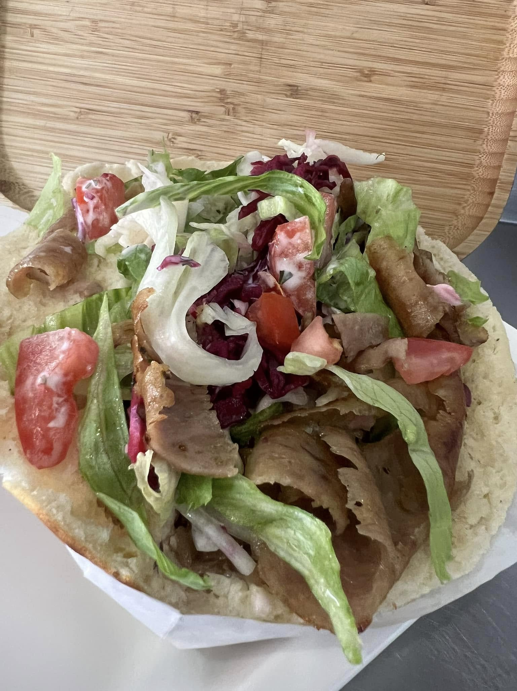
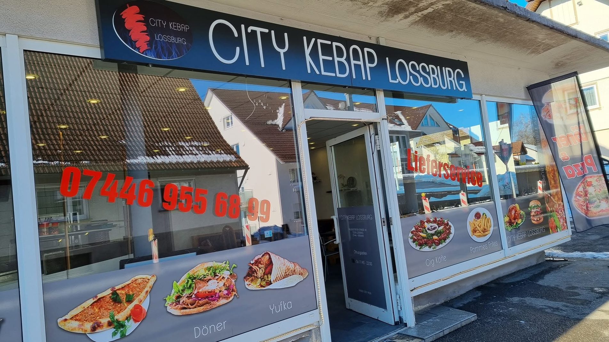
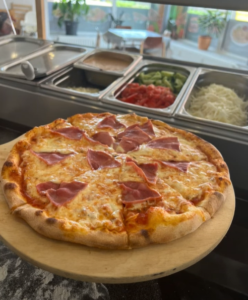
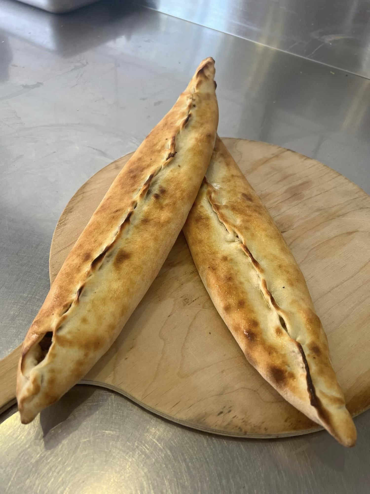
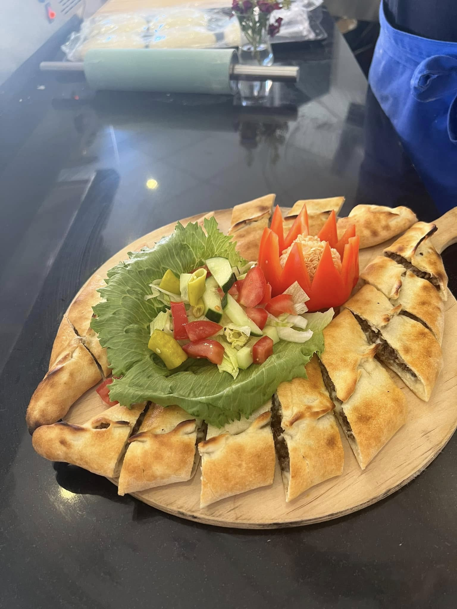

01
Döner
Knuspriges Brot, frischer Salat und würziges Fleisch.
City Kebap Loßburg
Döner, Pizza, Pide und mehr – unkompliziert, herzlich und frisch für dich zubereitet.

Was darf es sein?
Ob schneller Imbiss, gemütliches Abendessen oder etwas zum Mitnehmen: Bei uns findest du herzhafte Klassiker und frische Zutaten.

Knuspriges Brot, frischer Salat und würziges Fleisch.

Ofenfrisch und mit Liebe belegt.

Goldbrauner Teig mit herzhaftem Belag.

Zum Teilen oder ganz für dich.
Komm vorbei
Du findest uns mitten in Loßburg. Komm spontan vorbei oder ruf kurz durch – wir sind gerne für dich da.
Route planen ↗Kontakt & Lieferung
Du möchtest direkt bestellen oder hast eine Frage? Wir sind nur einen Anruf oder eine Nachricht entfernt. Unser Lieferservice bringt deine Bestellung bequem zu dir.